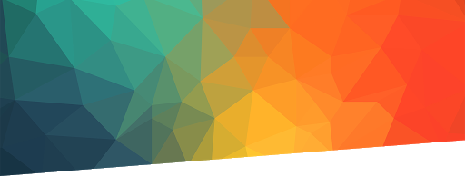
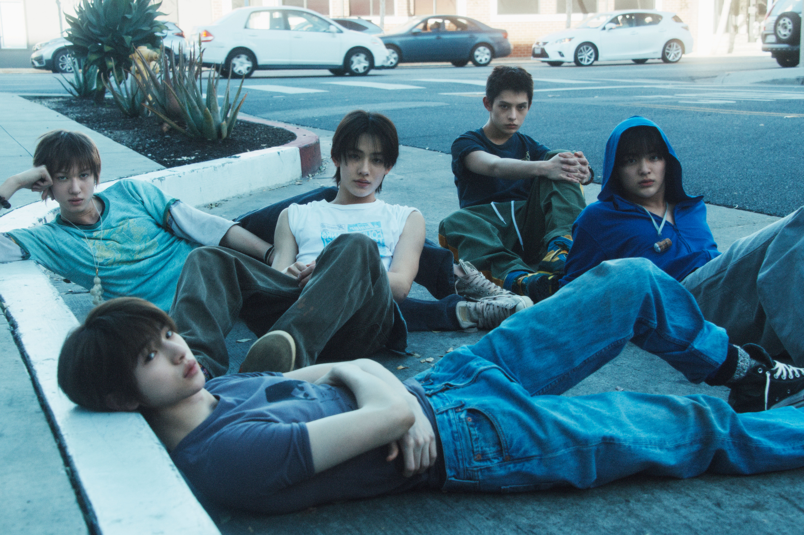
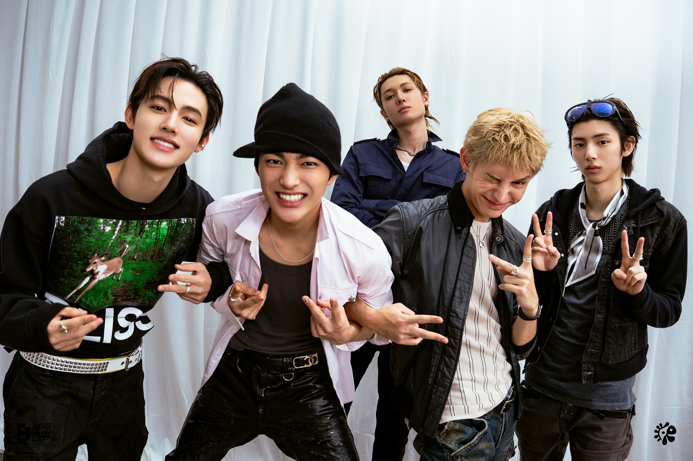

CORTIS merupakan KPOP boy group beranggotakan 5 orang dibawah BIGHIT MUSIC. Mereka debut pada tanggal 18 Agusutus 2025 dengan single berjudul "What You Want". CORTIS beranggotakan Martin, James, Juhoon, Seonghyeon, dan Keonho.
Nama CORTIS merupakan akronim dari COLOR OUTSIDE THE LINES yang berarti "berpikir bebas, keluar dari standar dan aturan yang berlaku di dunia." Anggota CORTIS berasal dari Korea Selatan, Kanada, Taiwan, dan Thailand. Pada januari 2026, hanya dalam 5 bulan setelah debut, CORTIS berhasil memenangkan penghargaan artis pendatang baru terbaik.
Sumber: WIKIPEDIA dan KPROFILES
Saya mulai mengenal CORTIS pada tanggal 30 Desember 2025. Kejadian tersebut pun tidak disengaja. Bermula dari saya yang tidak sengaja melihat fan edit Martin pada FYP TikTok dan dari situlah saya mulai tertarik dengan CORTIS. Anggota favorit saya adalah Martin dan Seonghyeon. Jika sedang bepergian jarak jauh saya suka mendengarkan salah satu lagu mereka yang berjudul Joyride. Ada alasan mengapa saya memilih foto dibawah ini, yaitu karena foto tersebut merupakan dokumentasi CORTIS pada saat pertama kali ke Indonesia pada tanggal 20 Juni 2026 sebagai headliner acara AlloBank Festival di jakarta.
